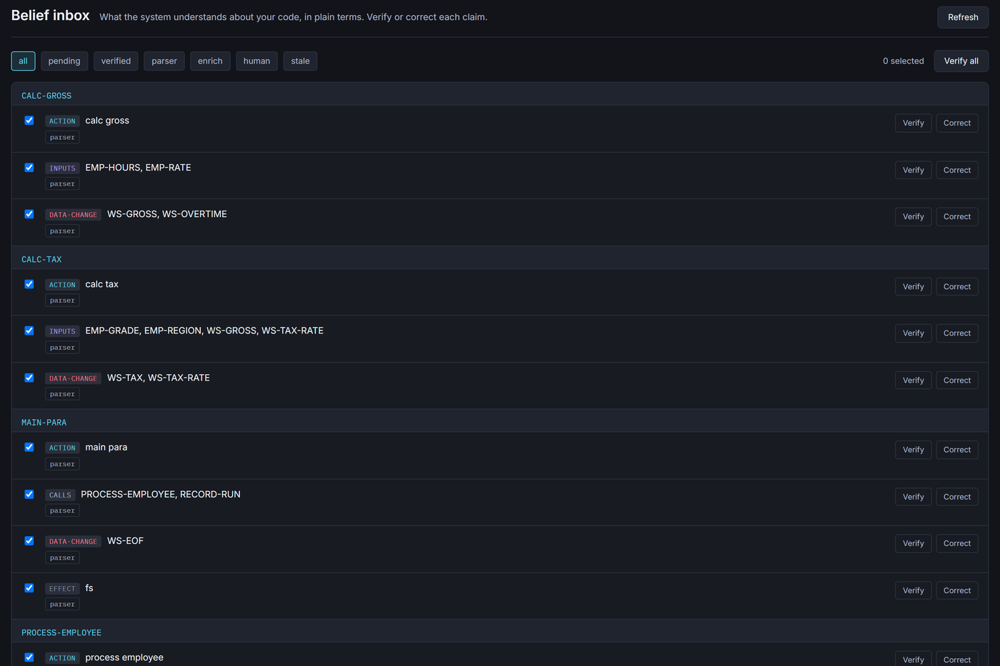
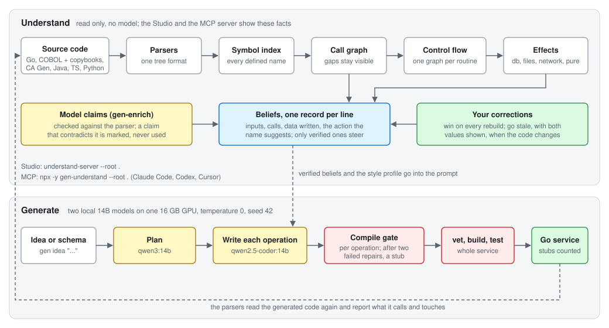

AI writes more code than people can read. gen-system reads your code with parsers and tells you what a change may break, what it now touches, and whether any test reaches it. The same change always gets the same answer.
$ understand-review --base main
May break
store.go:8 Save changed its signature from (name string) to (name string, force bool);
1 caller outside this change: Main (main.go:3)
store.go:9 Old was removed but is still called from 1 place: Main (main.go:3)
New side effects
store.go:8 Save now touches files
store.go:25 Fresh is new and touches the network
No test reaches these
store.go Save, Fresh
Grew
store.go:12 Helper has 3 more branches (0 to 3)
Run it in a terminal or in CI, or let your AI agent call it as the MCP tool review_diff. It reads Go, Python, TypeScript, Java, COBOL and CA Gen.
This is the real Studio page, running on saved answers from gen-system. Click any routine to see its callers, its callees, its control flow graph and its source. The demo is read only, so Verify and Correct are off.
File I/O, an EVALUATE on the pay grade and an EXEC SQL insert. The Beliefs page lists what each paragraph reads and writes.
Open the call graph → Go · 3 filesA SQL transaction, pricing and a receipt file. Effects sort every function into database, files, network or pure.
Open the beliefs → Python · 2 packagesPose Lab and Weapon Lab, which pose a game character's hands on a gun. Open the solver's main loop and follow its rounds, fits and wall checks.
Open the control flow →For each routine, gen-system lists the inputs, the calls, the data it writes and the action its name suggests. It calls each line a belief.

The read only half runs as an MCP server. Claude Code, Codex, Cursor or any MCP client can review a change, search symbols, walk call graphs, read control flow graphs and effects, and list the beliefs. The server runs locally and sends nothing anywhere.
It links no generation code and no model client, and an architecture test fails the build if that ever changes.
# Claude Code claude mcp add gen-understand -- npx -y gen-understand --root . # or with Go go install github.com/hpdkhoa/gen-system/generator/cmd/understand-mcp@latest
// "who calls CALC-TAX?" on examples/payroll
call_graph CALC-TAX, callers, depth 3
PROCESS-EMPLOYEE → CALC-TAX
MAIN-PARA → PROCESS-EMPLOYEE
effects
db: RECORD-RUN
pure: CALC-GROSS, CALC-TAX
Parsers measured on 2026-10-20 and checked by CI on every push. The SWE-bench run
is from 2026-09-09, on one RTX 4060 Ti with 16 GB; its raw files and a SHA-256 manifest are in
results/2026-09-09/.
The SWE-bench number is localization recall, not a solve rate: gen-system writes no fix. The walk reaches a median of 422 files per task, and zero hops already reach 0.615. "Internal calls" leaves out calls into the standard library and runtime, which have no project definition to resolve to. An earlier version of this page said 100% in all four repositories; that run missed most calls between CobolCraft's programs. GnuCOBOL's compiler now checks every CALL and PERFORM site in CobolCraft on every push, and gen-system agrees on all 4,132.
The parsers build the call graph, the control flow graphs and the effects. The review, the Studio and the MCP server read them. A separate experiment tests whether the same graph helps a local model write Go code that compiles.

You need Go 1.25 or newer. The read only half needs nothing else.
git clone https://github.com/hpdkhoa/gen-system.git cd gen-system ./install.sh --understand # the read only half understand-server --root ./your-repo # then open http://localhost:28080/